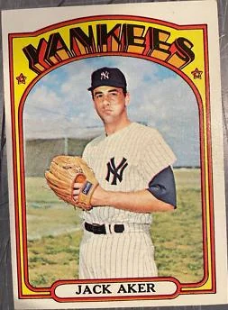
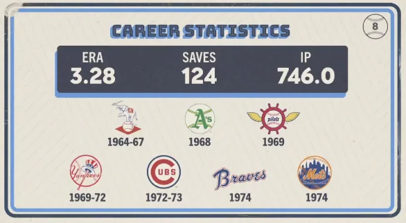

Jack Aker
Career Highlights & Facts
(Facts are AI-generated and may require verification)
- Arrived in the Bronx as part of a mid-season exchange for a pitcher who had previously been a key rotation piece for the pinstripes.
- Served as a reliable arm in the bullpen during the transition years of the franchise, bridging the gap between eras.
- Was involved in a transaction that brought a legendary outfielder and fan favorite to the Yankees in exchange for a player to be named later.
Would you like to find out more about Jack Aker?
Career Totals
| WAR | W | L | ERA | G | GS | SV | IP | SO | WHIP |
|---|---|---|---|---|---|---|---|---|---|
| 8.0 | 47 | 45 | 3.28 | 495 | 0 | 124 | 746.0 | 404 | 1.277 |
Statistics via Baseball-Reference.com
The Original Clue
